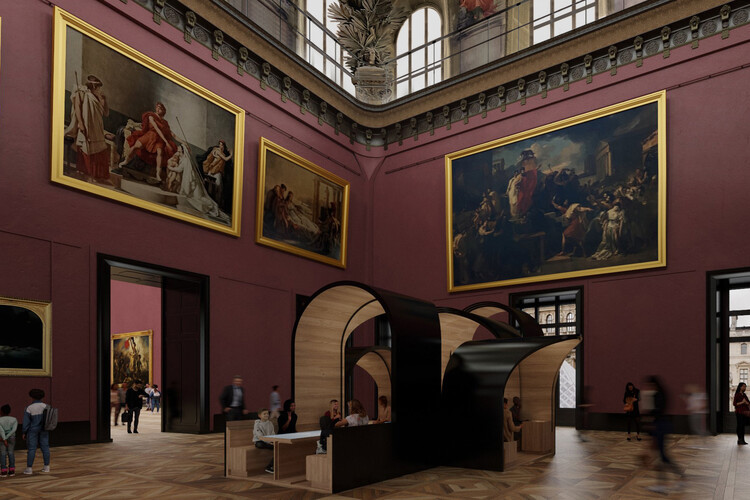

Explore

Mission Statement
MonoMuse is dedicated to exploring the evolving relationship between art, technology, and society. Our mission is to inspire curiosity and creativity by showcasing innovative exhibitions that highlight how digital tools, emerging technologies, and human imagination shape the future of artistic expression.
Who We Serve
- Students and educators interested in creative technology
- Artists exploring digital and interactive media
- Families and visitors looking for immersive cultural experiences
- Community members interested in innovation and creativity
Founded
MonoMuse was founded in 2016 as a contemporary museum focused on the intersection of art and technology.
Milestones
- 2023: Expansion of the museum space and launch of international artist collaborations.
- 2018: Launch of the Interactive Media Lab, allowing visitors to experiment with creative coding.
- 2016: MonoMuse opens its doors with its first exhibition on digital storytelling.